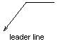

Autodesk AutoCAD 2021: ActiveX Developer's Guide > Dimensions, Leaders, and Geometric Tolerances > About Creating Leaders and Annotation (VBA/ActiveX) >
You can create a leader line from any point or feature in a drawing and control its appearance as you draw it.
Leaders can be straight line segments or smooth spline curves. Leader color is controlled by the current dimension line color. Leader scale is controlled by the overall dimension scale set in the active dimension style. The type and size of the arrowhead, if one is present, is controlled by the first arrowhead defined in the active style.
A small line known as a hook line usually connects the annotation to the leader. Hook lines appear with MText and feature control frames if the last leader line segment is at an angle greater than 15 degrees from horizontal. The hook line is the length of a single arrowhead. If the leader has no annotation, it has no hook line.

To create a leader line, use the AddLeader method. This method requires three values as input: the array of coordinates specifying where to create the leader, the annotation object (or NULL if the leader is to have no annotation), and the type of leader to create.
The type of leader specifies whether the leader is to be a straight line or a smooth spline curve. It also determines whether or not the leader is to have arrows. Use one of the following constants to specify the type of leader: acLineNoArrow, acLineWithArrow, acSplineNoArrow, or acSplineWithArrow. These constants are mutually exclusive.
This example creates a leader line in model space. There is no annotation associated with the leader line.
Sub Ch5_CreateLeader()
Dim leaderObj As AcadLeader
Dim points(0 To 8) As Double
Dim leaderType As Integer
Dim annotationObject As AcadObject
points(0) = 0: points(1) = 0: points(2) = 0
points(3) = 4: points(4) = 4: points(5) = 0
points(6) = 4: points(7) = 5: points(8) = 0
leaderType = acLineWithArrow
Set annotationObject = Nothing
' Create the leader object in model space
Set leaderObj = ThisDrawing.ModelSpace. _
AddLeader(points, annotationObject, leaderType)
ZoomAll
End Sub